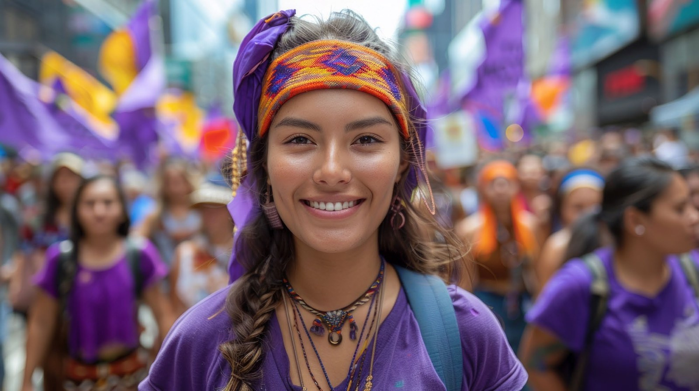
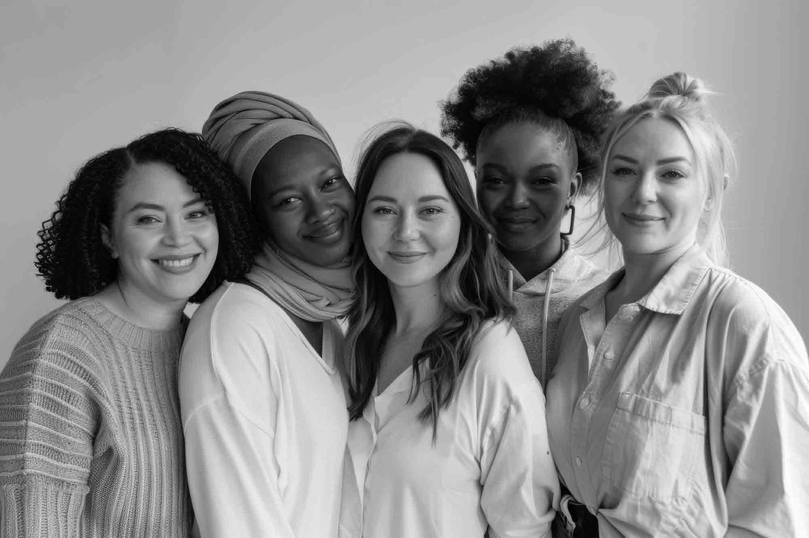

Ep. 01

Identidad En La Frontera
Maximiliano Bernal Albarracín
Multimedia
Podcast, relatos y videos para reconocer historias de identidad, territorio, justicia social, derechos y transformación.
Desliza para explorar los episodios del podcast Identidad Púrpura.
Maximiliano Bernal Albarracín

Glojai Villamizar Mariño

Beatriz Mosquera Hernández

Marieth Lozano Sánchez
Desliza para explorar los videos de la Fundación Mujeres Púrpura.

PróximamenteMujeres Púrpura
Videos sobre proyectos, talleres y acciones comunitarias.
Buscar en YouTube
PróximamenteMujeres Púrpura
Talleres, encuentros y momentos que construyen comunidad.
Ver en YouTubeInstagram: @fmujerespurpura · Teléfonos: 3107623336 / 3017752762 · Web: www.mujerespurpura.org